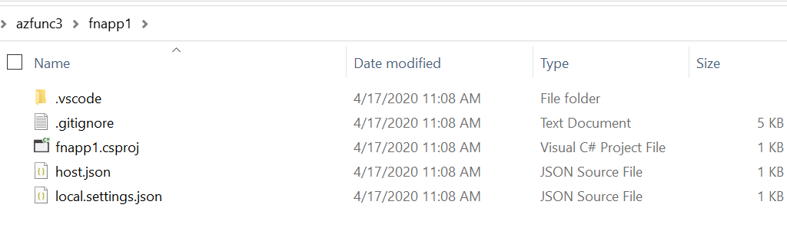
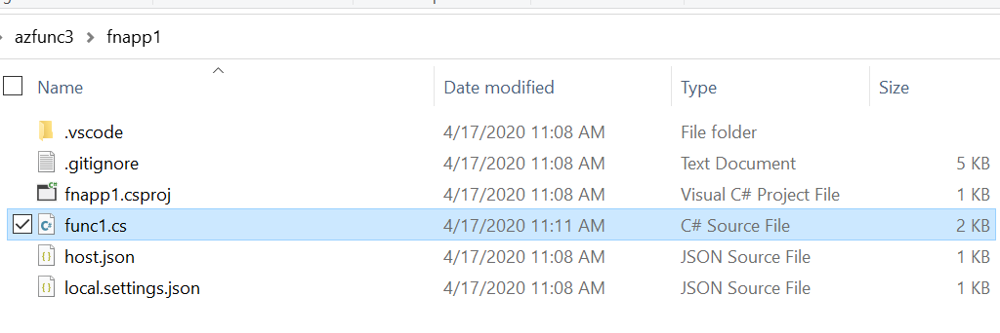
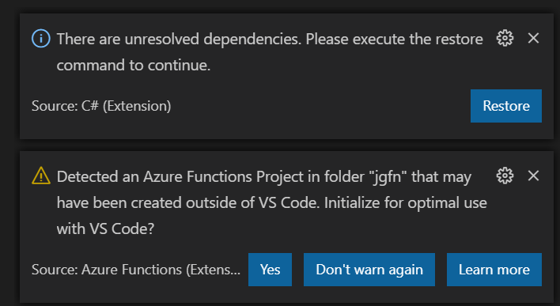
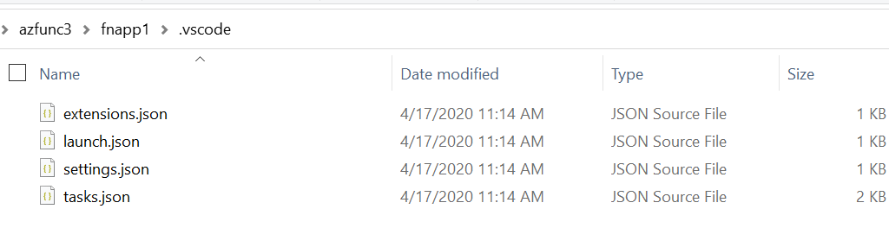
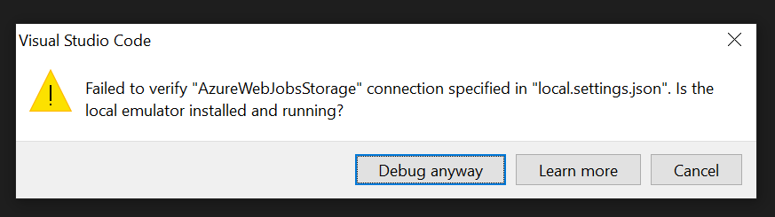
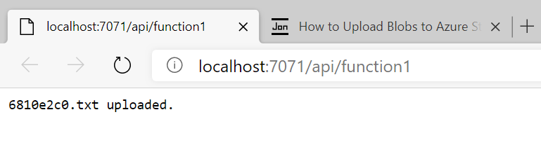
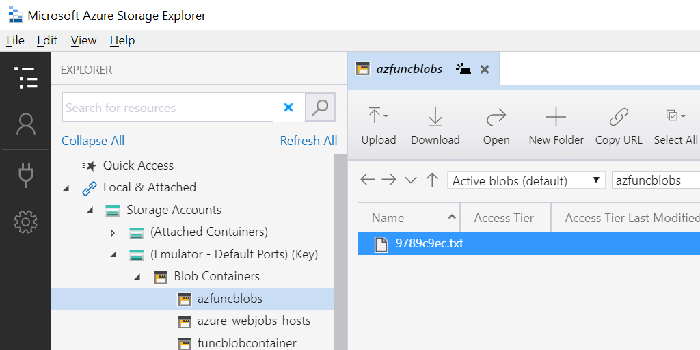

In this 3 part series we are going to learn a few methods for developing an Azure Function that uploads blobs to Azure Storage using the new Azure Blob Storage and Azure Identity Client Libraries.
Here are the 3 development scenarios that we are going to cover in this series:
Part 1: Local Function with Azurite and AzureCliCredential (local function, local storage)
Part 2: Local Function with Azure Storage and AzureCliCredential (local function, cloud storage)
Part 3: Azure Function with Azure Storage and ManagedIdentityCredential (cloud function, cloud storage)
Code: The code for this series can be found here: https://github.com/jongio/azure-blob-functions-managedid
Azure Identity and DefaultAzureCredential
With Azure Identity, we have many token credential types and allow you to chain them in any way that you please. For example, if you want your app to try to use Managed Identity first and then fallback to Azure CLI credential, then you would do something like this:
var cred = new ChainedTokenCredential(new ManagedIdentityCredential(), new AzureCliCredential());
And then pass that into your client
var client = new BlobServiceClient(uri, cred);
When you call a method on that client, it will try to get tokens from each of the credential types that you instantiated ChainedTokenCredential with.
Azure Identity also provides a default chain called DefaultAzureCredential, which will try many of the common credential types. The exact order can be found here: DefaultAzureCredential Class. DefaultAzureCredential includes ManagedIdentityCredential and AzureCliCredential, so you can use it to cover the local and cloud scenarios without changing code, but I have seen most customers start with DefaultAzureCredential and then create their own chain, so they know exactly what credentials are being tried and used.
This series makes use of the Azure CLI, because that is my preference for interacting with Azure. You can also do all of the Azure related steps with the Portal, ARM, Powershell, or REST.
I’m also using .NET Core and Linux, because that is what my customer was using when I was helping them figure this out. This same flow can be used for any language and any OS.
Local Function with Storage Emulator (local function, local storage)
Local Machine Setup
Let’s get our local machine setup to run the function locally using Azurite
You will need this to run the function locally as the Function needs a place to store its metadata. We’ll also write our blobs here for this ‘local only’ scenario. I have not tested this on Linux, so comments on your experience with Azurite would be appreciated.
Versions:
- Azurite: 3.8.0
- Start Azurite
In order to work with the Azure SDKs, you need to start Azurite with a cert and OAuth enabled. Here’s the command to do so:
azurite --oauth basic --cert certname.pem --key certname-key.pem
Full steps, including how to generate the cert, can be found here: Local Azure Storage Development with Azurite, Azure SDKs, and Azure Storage Explorer
You’ll use this to view the blobs that have been created. You can find more info about Storage Explorer here: Azure Storage Explorer
Version: 1.15.0
This is needed to code the Azure Function in .NET Core. (You won’t need this if you create a Function in a different language)
Version: 3.1.401
This is required for the Azure Function Core Tools in the next step. Ensure you have Node.js 10+ with the node -v command.
Version: 12.13
The Core Tools allow you to create projects, functions, and host them locally.
npm install -g azure-functions-core-tools@3
Version: 3.0.2798
This is my main editor, but feel free to use something else.
Version: VS Code Insiders: 1.49
- Optional, but useful to start streaming logs.
Version: 0.24.0
Create the Azure Function
- Open Terminal
Open a terminal and navigate to a folder where you want to place your code. Feel free to use the VS Code terminal.
- Create Function App Project
The following command will create the main function project to house the functions.
func init FUNCTION_APP_NAME --csharp --worker-runtime dotnet
Parameters:
FUNCTION_APP_NAMEThis is a unique name that you create.--worker-runtimeWe’re using dotnet, but feel free to use a different language.
This is what your directory structure will look like after you have created the function app.

If you have all the latest versions of the SDKs and tools installed, as of 2/2/2020, your csproj file will look like the following:
<Project Sdk="Microsoft.NET.Sdk">
<PropertyGroup>
<TargetFramework>netcoreapp3.1</TargetFramework>
<AzureFunctionsVersion>v3</AzureFunctionsVersion>
</PropertyGroup>
<ItemGroup>
<PackageReference Include="Microsoft.NET.Sdk.Functions" Version="3.0.3" />
</ItemGroup>
<ItemGroup>
<None Update="host.json">
<CopyToOutputDirectory>PreserveNewest</CopyToOutputDirectory>
</None>
<None Update="local.settings.json">
<CopyToOutputDirectory>PreserveNewest</CopyToOutputDirectory>
<CopyToPublishDirectory>Never</CopyToPublishDirectory>
</None>
</ItemGroup>
</Project>
- Change Directory
After the project is created, navigate to that new directory.
cd FUNCTION_APP_NAME
Parameters:
FUNCTION_APP_NAMEThe name of the Function app that you just created.
- Create Function
The following command will create a single function in your project.
Make sure you are in the root of the function project (run the CD command above) before you run this.
func new --name FUNCTION_NAME --template "Http Trigger"
Parameters:
FUNCTION_APP_NAMEThe name of the Function app that you just created.--templateWe’re using Http Trigger, but feel free to use a different trigger.
This is what the directory structure will look like after you create the function:

- Open the Project in VS Code
Run the following command from the terminal to open VS Code in that folder:
code .
- VS Code Prompts
If you see a “Restore” Vs Code Prompt or a prompt like below, click “Restore” and “Yes”.
IMPORTANT: This step is important, make sure you click “Restore” and “Yes” as that will setup VS Code debugging for you.

After you click the .vscode folder in your project will now have a launch.json file that has all the setting to help you debug.

- Add Azure SDK Dependencies
dotnet add package Azure.Identity
dotnet add package Azure.Storage.Blobs
You need at least Azure.Identity --version 1.2.2 for the Azure CLI authentication steps to work.
Versions:
- Identity: 1.2.2
- Storage.Blobs: 12.5.1
See https://aka.ms/azsdk for latest versions.
- Open Function Project in VS Code
Open the project in VS Code and open the function file.
- Add
usingStatements
using System.Text;
using Azure.Identity;
using Azure.Storage.Blobs;
- Add Code
Replace the body of the Run function with the following code. This code will instantiate a new BlobContainerClient, create the container, and upload a blob.
Since creating this post, I did a follow up post that shows you how to use Azurite with HTTPS. Please view that post if you’d like to use HTTPS and simplify the BlobContainerClient to only use DefaultAzureCredential: Use HTTPS and DefaultAzureCredential with Azurite for Local Azure Storage Emulation
var host = Environment.GetEnvironmentVariable("AZURE_STORAGE_HOST");
var account = Environment.GetEnvironmentVariable("AZURE_STORAGE_ACCOUNT");
var container = Environment.GetEnvironmentVariable("AZURE_STORAGE_CONTAINER");
var emulator = account == "devstoreaccount1";
var uri = $"https://{(emulator ? $"{host}/{account}" : $"{account}.{host}")}/{container}";
// Generate random string for blob content and file name
var content = Guid.NewGuid().ToString("n").Substring(0, 8);
var file = $"{content}.txt";
// For Azurite 3.7+ with HTTPS and OAuth enabled, you can run Azurite with the following
// azurite --oauth basic --cert cert-name.pem --key cert-name-key.pem
var client = new BlobContainerClient(new Uri(uri), new DefaultAzureCredential());
// Create container
await client.CreateIfNotExistsAsync();
// Get content stream
using var stream = new MemoryStream(Encoding.ASCII.GetBytes(content));
// Upload blob
await client.UploadBlobAsync(file, stream);
return (ActionResult)new OkObjectResult($"{file} uploaded.");
- Set Local Settings
Open local.settings.json and ensure the following values are set:
If you have cloned the repo, then take the settings from
local.settings.local.jsonand copy them to'local.settings.json
{
"IsEncrypted": false,
"Values": {
"AzureWebJobsStorage": "UseDevelopmentStorage=true",
"FUNCTIONS_WORKER_RUNTIME": "dotnet",
"AZURE_STORAGE_HOST": "127.0.0.1:10000",
"AZURE_STORAGE_ACCOUNT": "devstoreaccount1",
"AZURE_STORAGE_CONTAINER": "azfuncblobs"
}
}
Notes:
AZURE_STORAGE_HOSTAzurite host the Blob endpoints at127.0.0.1:10000by default.AZURE_STORAGE_ACCOUNTset todevstoreaccount1will tell our code to write our blobs to Azurite instead of Azure. We’ll change this to our actual storage account name later on.AZURE_STORAGE_CONTAINERcan be “azfuncblobs” or any container name you want. The container will automatically be created the first time the function is run.
- Start and Run the Function
Hit F5 in VS Code and you’ll see the following:
funcblobtest: [GET,POST] http://localhost:7071/api/funcblobtest
If you see the following, click “Debug Anyway”

Ctrl+Click that link to open it in a browser. Your function will run and you will see output like the following:
00e7d1bd.txt uploaded.

- Verify Success with Storage Explorer
Open Storage Explorer and navigate to: Local & Attached -> Storage Accounts -> (Emulator - Default Ports) (Key) -> Blob Containers -> azfuncblobs
Verify that your file has been successfully uploaded.

Debugging
If you see an error like this, that means that your Azure Storage Emulator has not been started. See above for instructions on how to start your Storage Emulator.
[1/31/2020 7:55:30 PM] System.Private.CoreLib: Exception while executing function: function1. Azure.Core: Retry failed after 6 tries. (No connection could be made because the target machine actively refused it.) (No connection could be made because the target machine
actively refused it.) (No connection could be made because the target machine actively refused it.) (No connection could be made because the target machine actively refused it.) (No connection could be made because the target machine actively refused it.) (No connection could be made because the target machine actively refused it.). Azure.Core: No connection could be made because the target machine actively refused it. System.Net.Http: No connection could be made because the target machine actively refused it. System.Private.CoreLib: No connection could be made because the target machine actively refused it.
Now that we have everything working locally, lets move on to setting up our Azure resources. Click on the Part 2 link below to get started.
Part 1: Local Function with Storage Emulator (local function, local storage)
Part 2: Local Function with Azure Storage and Service Principal (local function, cloud storage)
Part 3: Azure Function with Azure Storage and Managed Identity (cloud function, cloud storage)
Jon